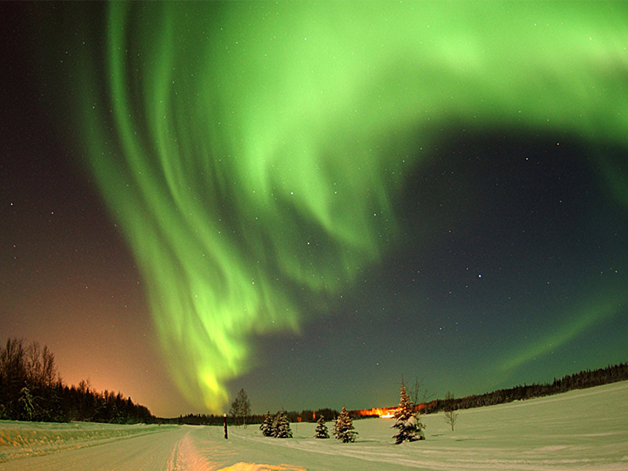
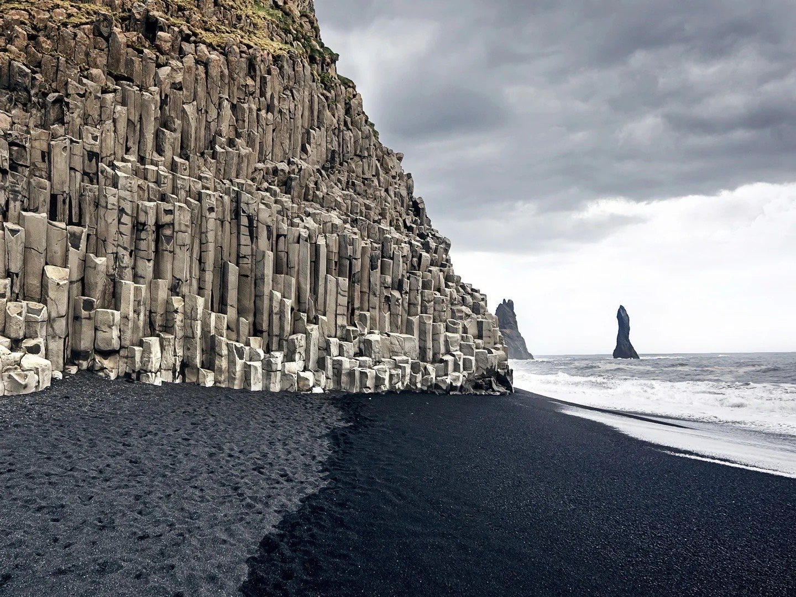
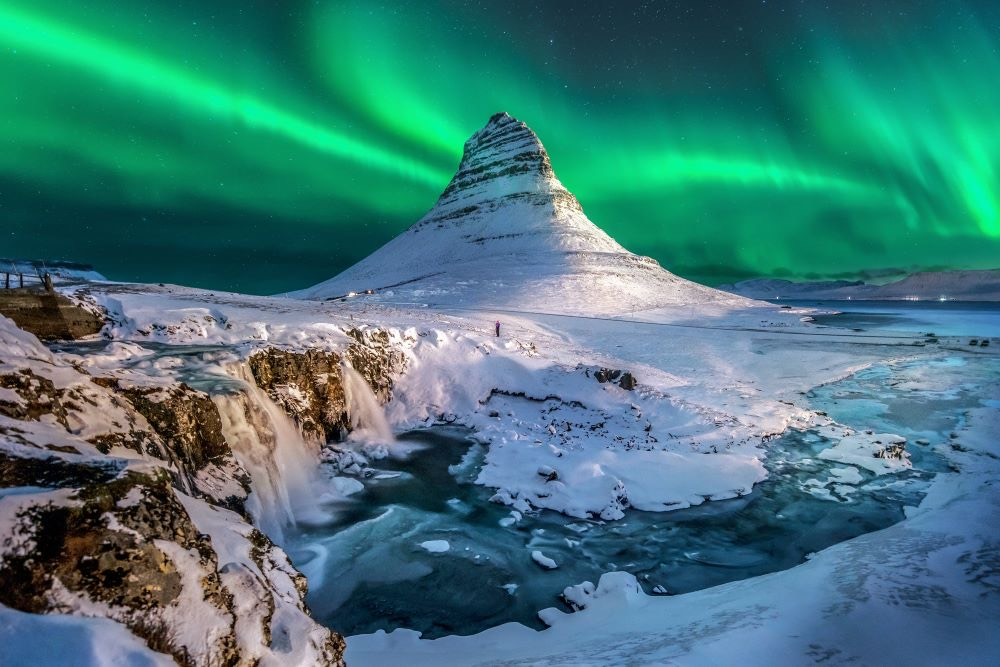
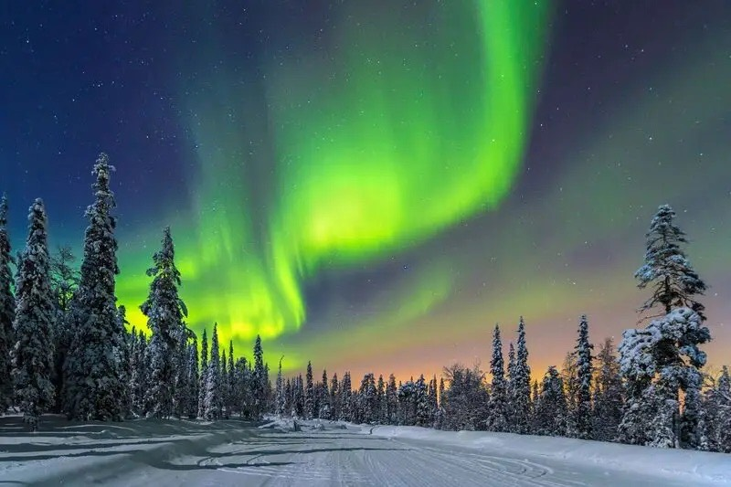
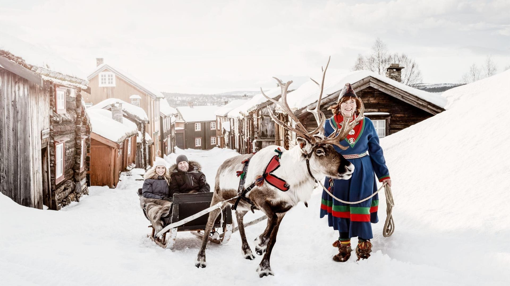
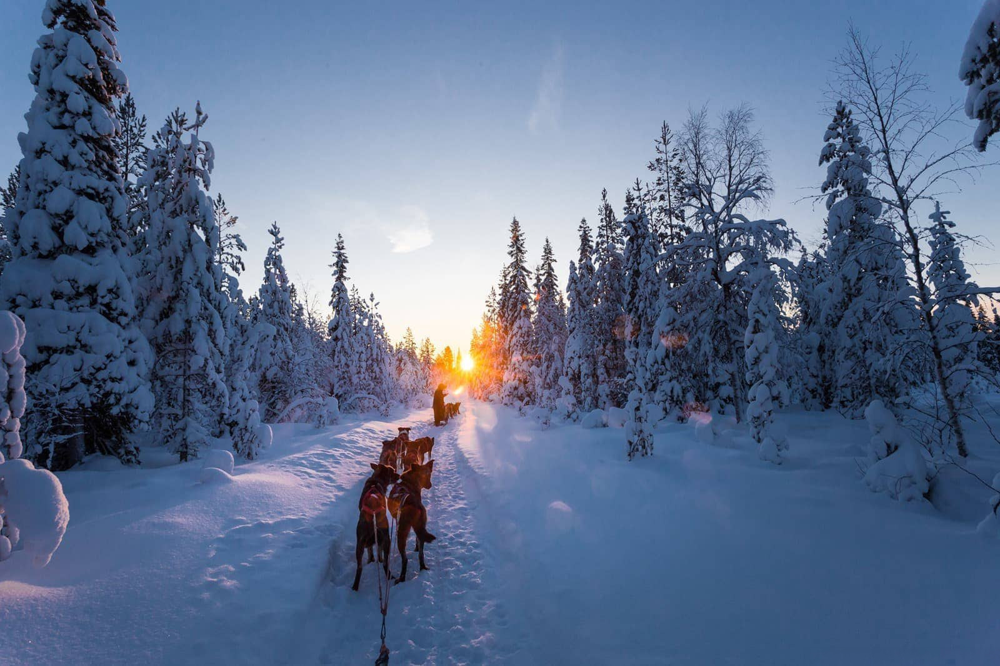

 Caçar a Aurora BorealNoites dedicadas a perseguir o espetáculo de luzes, nos melhores céus da Islândia, Noruega e Lapônia.
 Praias de areia negra vulcânicaAs colunas de basalto e os mares bravios de Reynisfjara, em Vík.
 🇮🇸 Islândia Terra do gelo e do fogo Reykjavík, Blue Lagoon, Círculo Dourado, glaciares e as praias negras de Vík.
 🇳🇴 Noruega Os fiordes do Ártico Tromsø, a Catedral Ártica e as melhores noites para caçar a aurora.
 🇸🇪 Suécia A Lapônia sueca Kiruna e a noite no lendário Ice Hotel, esculpido em gelo e neve.
 🇫🇮 Finlândia O coração da Lapônia Huskies, cultura Sámi, renas e os iglus de vidro de Inari.